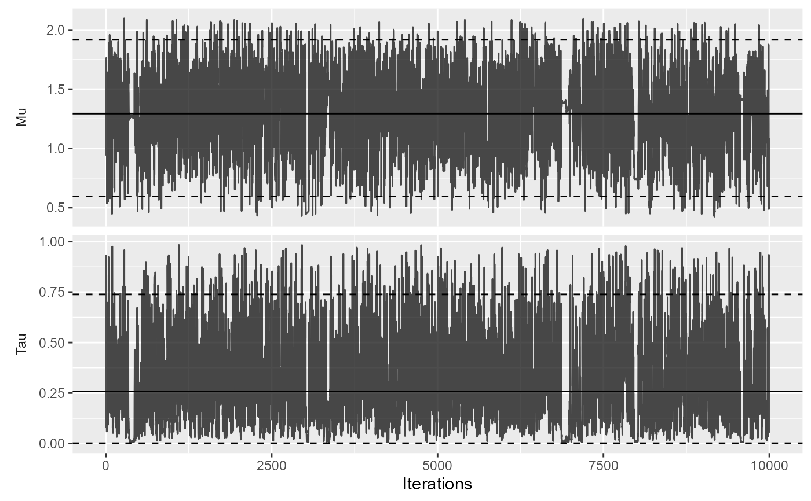

Plot MCMC trace
plotMcmcTrace( estimate, showEstimate = TRUE, dataCutoff = 0.01, fileName = NULL )
Arguments
| estimate | An object as generated using the |
|---|---|
| showEstimate | Show the parameter estimates (mode) and 95 percent confidence intervals? |
| dataCutoff | This fraction of the data at both tails will be removed. |
| fileName | Name of the file where the plot should be saved, for example 'plot.png'. See the function ggplot2::ggsave in the ggplot2 package for supported file formats. |
Value
A Ggplot object. Use the ggplot2::ggsave function to save to file.
Details
Plot the samples of the posterior distribution of the mu and tau parameters. Samples are taken using Markov-chain Monte Carlo (MCMC).
See also
Examples
# Simulate some data for this example: populations <- simulatePopulations() # Fit a Cox regression at each data site, and approximate likelihood function: fitModelInDatabase <- function(population) { cyclopsData <- Cyclops::createCyclopsData(Surv(time, y) ~ x + strata(stratumId), data = population, modelType = "cox") cyclopsFit <- Cyclops::fitCyclopsModel(cyclopsData) approximation <- approximateLikelihood(cyclopsFit, parameter = "x", approximation = "custom") return(approximation) } approximations <- lapply(populations, fitModelInDatabase) approximations <- do.call("rbind", approximations) # At study coordinating center, perform meta-analysis using per-site approximations: estimate <- computeBayesianMetaAnalysis(approximations)#>#>plotMcmcTrace(estimate)